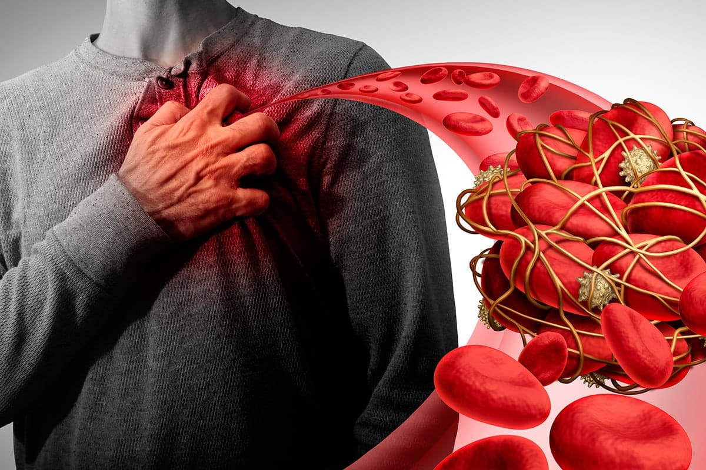
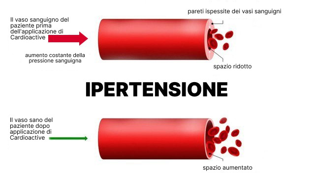

CENTRO PER L`IPERTENSIONE ARTERIOSA
Pagina aziendale

Mi piace

Contattaci


Piace a 18 889 persone

CENTRO PER L`IPERTENSIONE ARTERIOSA
59 milioni di italiani non sospettano da anni di cosa sono malati. Il prodotto che i medici nascondono
Le malattie cardiovascolari sono la principale causa di morte nel mondo. Secondo l'OMS, ogni anno muoiono 8 milioni di persone, un terzo delle quali prematuramente e prima della vecchiaia.
La cosa pericolosa è che la malattia può scegliere chiunque, anche una persona giovane e sana, ed essere asintomatica. Sfortunatamente, è impossibile prevedere chi e quando prenderà il sopravvento questo amaro destino, di cui non puoi indovinare per anni.
Mal di testa, palpitazioni cardiache, punti neri negli occhi, stanchezza cronica, apatia e fluttuazioni di pressione sono segni di una malattia cardiaca come l`ipertensione. Spesso l`ipertensione accompagna altre malattie e provoca gravi complicazioni del sistema cardiovascolare.

Un medico dell`Istituto di ricerca, che studia le malattie cardiovascolari in Italia, ha commentato la situazione delle malattie cardiache nel Paese e ha fornito semplici consigli su come sbarazzarsi della malattia in modo facile e sicuro.
Per questo non è necessario spendere molto tempo e denaro. C`è un prodotto affidabile raccomandato da medici esperti. E prima agisci, meglio è per te.
I nostri redattori hanno telefonato alla conduttrice televisiva Simona Pandolfi e lei ci ha parlato di un prodotto efficace per l`ipertensione che ha salvato la vita di suo padre.
Simona Pandolfi
`Mio padre ha 67 anni, è iperteso. Nell`ultima visita in ambulanza i medici gli hanno consigliato di tenere un diario della pressione sanguigna. I risultati di quel giorno sono andati fuori: 227/115, 226/114, e così via per tutto il giorno, diversi giorni di seguito.
A volte capitava anche che il tonometro semplicemente non riusciva a spremere la sua pressione e dava un errore! Ho paura anche solo di indovinare quale pressione avesse in quel momento...
La cosa peggiore è che il padre non sente niente, anche quando la sua pressione sanguigna è di 230 e oltre. Quando devo andare al lavoro, ho paura che possa succedere qualcosa a mio padre e non sarò in grado di essere lì per aiutare.
Ho sentito dalla registrazione del programma che ogni settimo italiano muore di malattie cardiache e 5 di loro sono completamente inaspettati quando gli indicatori di pressione sono stati normali per molto tempo o le malattie cardiache non venivano affatto diagnosticate.
I medici ci hanno detto che non esiste una cura per l`ipertensione. Pertanto, ogni sei mesi andiamo a fare esami e iniezioni. Poi di nuovo la pressione fuori scala per giorni e giorni. Abbiamo aggiustato l`alimentazione, abbiamo aggiunto una leggera attività fisica, ma non ci sono stati risultati.
Un cardiologo familiare ha parlato del nuovo prodotto , che sta guadagnando popolarità. L`ho ordinato subito.
Anche se la speranza, a dire il vero, non lo era affatto. Ma un amico ha affermato che aiuta a migliorare il funzionamento del sistema cardiovascolare di oltre il 70%.
E sorprendentemente, papà è migliorato: lentamente, la pressione iniziò a riprendersi, gli attacchi si verificarono meno frequentemente. Ora, grazie a Dio, se ne sono andati da molto tempo.
Finora usiamo da quasi 6 settimane. - la nostra salvezza!!! Quanto siamo fortunati ad averlo trovato. Provalo e rimarrai sorpreso dal risultato! Puoi finalmente fare un respiro profondo di gioia per aver trovato un prodotto che aiuta`.
Abbiamo parlato con un cardiologo dell`Istituto Superiore di Sanità in Italia. Ci ha raccontato di più sull`ipertensione e ha fornito una valutazione dell`efficacia delle gocce Cardioattive. Ecco cosa abbiamo scoperto:
Sintomi di ipertensione
L`ipertensione è una malattia del sistema cardiovascolare, causata da un aumento stabile della pressione sanguigna.
Accompagna molte malattie e spesso provoca pericolose complicazioni nel sistema cardiovascolare: ictus, infarto del miocardio, crisi ipertensive e molti altri.

Il cervello di una persona morta per un ictus
Ci sono tali sintomi di ipertensione:
- mal di testa;
- battito cardiaco accelerato;
- punti o macchie nere davanti agli occhi, visione offuscata;
- acufeni;
- fatica cronica;
- apatia, nervosismo, sonnolenza;
- forti capogiri;
- sensazione di calore senza aumento della temperatura corporea.
Perché questa malattia è così pericolosa?
Spesso non ha sintomi. Nel 90% dei pazienti ipertesi, un aumento della pressione non provoca un cambiamento del benessere.
Se ignori questa malattia, questo porterà inevitabilmente a gravi malattie che rappresentano una vera minaccia per la tua vita.
Provoca molte complicazioni pericolose ed è spesso accompagnata da altre malattie (ictus, infarto del miocardio, accidente cerebrovascolare, rottura dell`aorta, insufficienza renale e altre). Se noti qualche sintomo, questo suggerisce che l`ipertensione ha già causato complicazioni. Pertanto, è necessario agire immediatamente e sbarazzarsi dell`ipertensione.
Può verificarsi in persone sane e giovani.
Non può essere curata definitamente di conseguenza, è necessario scegliere un prodotto che possa essere utilizzato a lungo e non nuocere alla salute.
La morte improvvisa si verifica nel 17% dei casi
Opinione di un esperto
"Purtroppo, nella stragrande maggioranza dei casi, l`ipertensione arteriosa non può essere curata ed è necessaria una terapia a lungo termine per tutta la vita.
È molto importante nella fase della diagnosi prescrivere il trattamento corretto. Se il trattamento viene interrotto bruscamente, ciò comporterà un rapido aumento della pressione sanguigna.
Il problema principale nel trattamento delle malattie cardiovascolari è che molto spesso ai pazienti viene prescritto un regime standard di farmaci che causano effetti collaterali o non possono essere prescritti affatto a causa di controindicazioni.
Pertanto, nel 2020, abbiamo iniziato a sviluppare il prodotto per l`ipertensione . Per fare ciò, abbiamo raccolto i componenti più efficaci e testato lo sviluppo risultante sui nostri pazienti".
aiuta a normalizzare a lungo la pressione sanguigna e prevenire lo sviluppo di altre malattie cardiovascolari, non provoca effetti collaterali ed è adatto al 99% dei nostri clienti.
Chi è a rischio
Ci sono tali fattori di rischio:
- altre malattie del cuore e dei vasi sanguigni;
- sovrappeso, obesità, diabete;
- eccessiva assunzione di sale, malnutrizione;
- bassa mobilità;
- cambiamento del tempo, tempeste magnetiche.
Sensazionale scoperta degli scienziati italiani dell`Istituto Superiore di Sanità
Secondo la ricerca medica, il tasso di sviluppo di patologie e complicanze cardiovascolari è cresciuto rapidamente negli ultimi anni.
Se non prendi misure urgenti o usi un trattamento inefficace, nel tuo corpo inizieranno inevitabilmente potenti processi patologici, che aumenteranno il rischio di gravi conseguenze.
Il problema è che la pressione sanguigna crescerà solo nel tempo, contribuendo alla distruzione dei vasi sanguigni e degli organi interni.
`Un team di scienziati dell`Istituto di ricerca in Italia dal 2020 sta sviluppando la formulazione di un prodotto innovativo per malattie cardiovascolari.
Durante la creazione di , gli scienziati hanno selezionato con cura i componenti e le loro proporzioni. L`efficacia del prodotto è clinicamente provata. Hanno anche condotto uno studio con oltre 200 volontari. Alcuni di loro hanno preso placebo, l`altri - . Il risultato ha piacevolmente sorpreso gli scienziati.
Dopo una settimana dall`applicazione delle gocce, i vasi sanguigni inizieranno a riprendersi.
Purtroppo, una brusca transizione verso una corretta alimentazione ed esercizio fisico non può darti una garanzia di essere al sicuro e che il problema è scomparso. Inoltre, i cambiamenti improvvisi possono danneggiare, perché il tuo corpo sarà sotto stress.
Nelle condizioni della vita moderna, non sarà così facile cambiare le tue abitudini e rinunciare ai tuoi cibi e bevande preferiti. Sarà più efficace utilizzare : aiuterà a rafforzare le pareti dei vasi sanguigni e a normalizzare la pressione sanguigna.
L`ipertensione è sempre più comune nei giovani e all`inizio può essere asintomatica. Abbiamo creato appositamente per farti sentire sano e felice!
Ingredienti di
Nella creazione delle gocce sono stati utilizzati solo ingredienti naturali e provati. - complesso 100% naturale di estratti vegetali. Loro aiutano a ridurre in sicurezza la pressione sanguigna, normalizzare il lavoro del muscolo cardiaco e prevenire la formazione di placche di colesterolo sulle pareti delle arterie. La composizione comprende:
estratto di biancospino - aiuta a rimuovere le placche di colesterolo dalle pareti delle arterie ea migliorare l`afflusso di sangue ai tessuti e al cuore. Aiuta a ripristinare l`elasticità dei vasi sanguigni e dei capillari;
estratto di motherwort - aiuta ad alleviare gli spasmi vascolari e a normalizzare la pressione sanguigna. Aiuta ad eliminare nervosismo, mancanza di respiro, mal di testa e acufeni. Aiuta a migliorare l`umore ea normalizzare il sonno;
estratto di frutta di luppolo - aiuta a purificare il sangue, eliminare piccoli aneurismi e normalizzare il ritmo cardiaco. Aiuta a prevenire lo sviluppo di malattie cardiovascolari: infarto, ictus, ecc.;

estratto di equiseto - aiuta a rafforzare e ripristinare le pareti dei vasi sanguigni, eliminandone tutti i microdanneggiamenti;

estratto di iperico - aiuta a purificare il sangue, eliminare piccoli aneurismi e normalizzare il ritmo cardiaco. Aiuta a prevenire lo sviluppo di malattie cardiovascolari: infarto, ictus, ecc.;
L`assunzione regolare del prodotto aiuterà a rafforzare i vasi sanguigni e a migliorare l`afflusso di sangue ai tessuti e al cuore, aiutando ad eliminare mancanza di respiro, affaticamento e gonfiore alle gambe. Aiuterà a prevenire lo sviluppo di malattie cardiovascolari: infarto del miocardio, angina pectoris, aritmie, aterosclerosi, ecc.
Come funziona il ?
Le gocce funzionano in 3 fasi:
- Aiutano a normalizzare la circolazione sanguigna
- Aiutano ad eliminare gli effetti della cattiva circolazione
- Aiutano ad aumentare la forza e l`elasticità delle pareti dei vasi sanguigni.
Supportano il sistema circolatorio, grazie al quale il sangue inizia a fluire attraverso i vasi verso tutti gli organi e i tessuti. Le arterie si diramano e formano una rete di capillari in cui avviene lo scambio di sostanze tra sangue e tessuti. Aiutano a dissolvere le placche aterosclerotiche e i coaguli di sangue.
Aiutano a ridurre i sintomi di malattie come ipertensione, mal di testa, vertigini, febbre nel corpo. Aiuta a normalizzare il peso e il metabolismo lipidico.
Questo aiuta a prevenire la formazione di nuove placche e riduce di 9 volte il rischio di ictus.
Nota bene: 2 volte all`anno con una malattia diagnosticata, per la prevenzione una volta ogni 1,5 anni. Durata dell`applicazione - 1,5 mesi, con sintomi gravi di disturbi circolatori - 2 mesi. I migliori risultati si ottengono se utilizzato per 30 giorni o più.
Sconti: Il produttore organizza regolarmente promozioni e consente di acquistare in modo più redditizio. Ci sono promozioni speciali per diverse categorie di cittadini, te ne parlerà il gestore.
Prezzo: Il costo delle gocce è disponibile per le persone con qualsiasi reddito.
Consegna: Non è necessario cercare le gocce in farmacia o recarsi in un punto di distribuzione per loro. Invece, il corriere organizzerà con te un orario conveniente e consegnerà il prodotto nelle tue mani.
ATTENZIONE: è valida l`offerta speciale del produttore. Non perdere l`occasione di provare con il 50% di sconto!

2785
Laura Rossi
Ha sofferto di ipertensione per molto tempo, costantemente perdevo la conoscenza. Al lavoro i colleghi ci sono già abituati. La pressione salta, la testa fa male, fa venire la febbre. Di notte ho la tachicardia. I medici mi hanno spaventato con la possibilità di un ictus. Ero spaventata perché mio nonno è morto per un ictus nella mia famiglia. Ho scoperto le gocce per caso, ho visto una menzione in un articolo medico e ho deciso di provarlo. Prendo già 4 settimane. Di conseguenza, la mia pressione sanguigna si è stabilizzata e i mal di testa sono scomparsi e non mi hanno infastidito per un mese. Mi sento giovane, sana e piena di energia. Consiglio a tutti!
38
2 giorni
Mi piace
Rispondi
Di più
Gabriella Marini
Già ho visitato una dozzina di cardiologi e inutilmente. Ognuno prescrive i propri farmaci, tutto è confuso, le pillole causano un sacco di effetti collaterali, niente va bene. Durante la giornata si verificano diversi sbalzi di pressione. Per molto tempo ho cercato di trovare una soluzione adatta e solo con ho iniziata a sentirmi meglio. Il 3° giorno, finalmente, i sintomi si sono attenuati!
54
2 giorni
Mi piace
Rispondi
Di più
Francesca Fiorentino
Il mio medico mi ha diagnosticato ipertensione arteriosa e tachicardia sinusale. Sono stata indirizzata per un consulto con un cardiologo, che mi ha anche diagnosticato ipertensione arteriosa di 1° grado e tachicardia sinusale. Ho sentita parlare di da amici, una settimana dopo l`assunzione tutti i sintomi sono scomparsi. Sono rimasta molto sorpresa. Ora mi sento come 20 enne, sana e felice!!!
81
3 giorni
Mi piace
Rispondi
Di più
Paolo Avallo
È positivo che abbiamo medici che stanno facendo il loro lavoro! Sembra che il resto stia solo giocando a fare i dottori, prescrivendo di tutto e facendoli solo soffrire ancora di più. Io stesso compravo farmaci molto costosi che mi venivano prescritti in ospedale. Ma hanno solo temporaneamente alleviato i sintomi. Quindi ho studiato in modo indipendente le offerte su Internet e ho acquistato . Questa è una delle migliori soluzioni nella lotta contro le malattie cardiovascolari! Mi ha reso la vita facile! Prima di a 52 anni, mi sentivo un vecchio indifeso. Ho seguito solo un corso. Prima di allora, assumevo pillole antipertensive. Avevano costantemente mal di testa, mal di cuore, c`era apatia e non c`era piacere dalla vita. Quindi ti consiglio di ordinare questo integratore a qualsiasi prezzo, non te ne pentirai! Mi sembra che i medici ci nascondano deliberatamente queste gocce, perché è redditizio per loro vendere quei prodotti per i quali i produttori li pagano.
90
3 giorni
Mi piace
Rispondi
Di più
Marco Greco
Le dita delle mani e dei piedi di mia zia hanno iniziato a diventare insensibili, il dottore ha raccomandato un farmaco vascolare, ma è molto costoso e nei commenti scrivono che provoca il cancro all`intestino. Alla fine, abbiamo deciso di seguire il consiglio di un`amica e abbiamo acquistato . Dopo 1 mese, l`intorpidimento era scomparso. Inoltre, la qualità di capelli, pelle, unghie è migliorata. C`era energia, allegria, la pressione smise di infastidire.
48
4 giorni
Mi piace
Rispondi
Di più
Giusy Bella
Ho 61 anni e 5 anni fa ho iniziata a pulire i miei vasi sanguigni. Il aiuta a mantenermi sana ed energizzata. Mi sento benissimo, anche se molti dei miei colleghi sono già morti. La pulizia dei vasi sanguigni è necessaria al 100%!
50
5 giorni
Mi piace
Rispondi
Di più
Luca Mazzocco
Ho completato 1 corso di e mi sento INCREDIBILE. La pressione non salta, la testa non fa male. Questo non è successo per molto tempo. Consiglio a tutti :)
42
5 giorni
Mi piace
Rispondi
Di più
Mauro de Matteo
Ora ho l`età in cui ho bisogno di prendermi cura della mia salute. Forse dovrei iniziare con . Inoltre, è molto facile da usare.
12
5 giorni
Mi piace
Rispondi
Di più